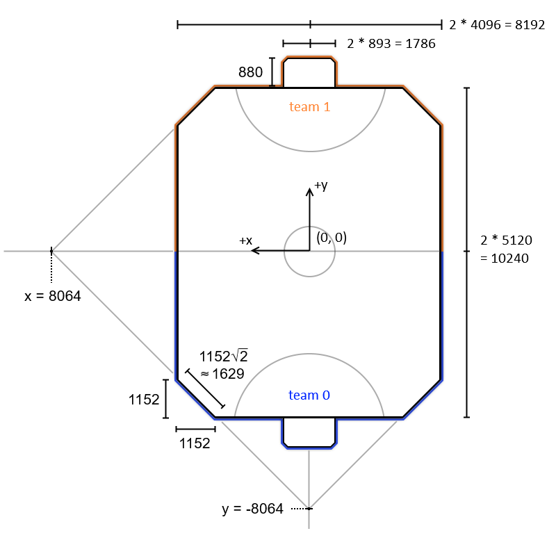
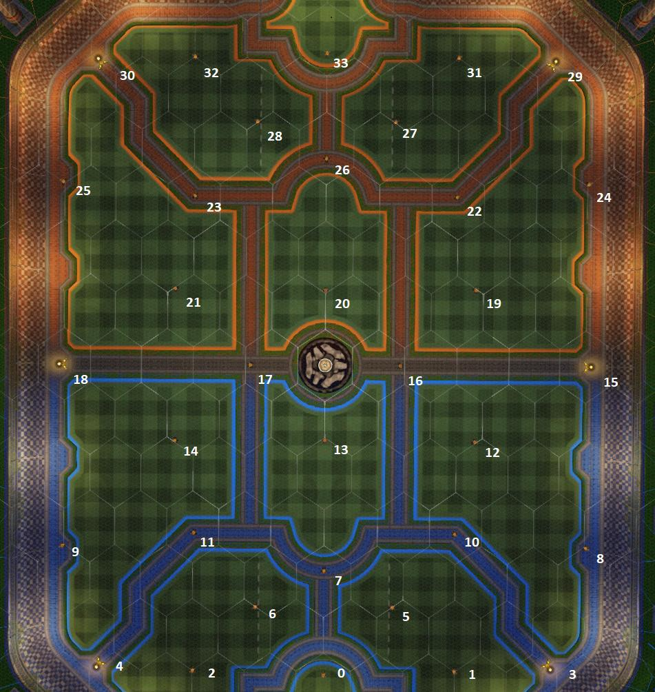
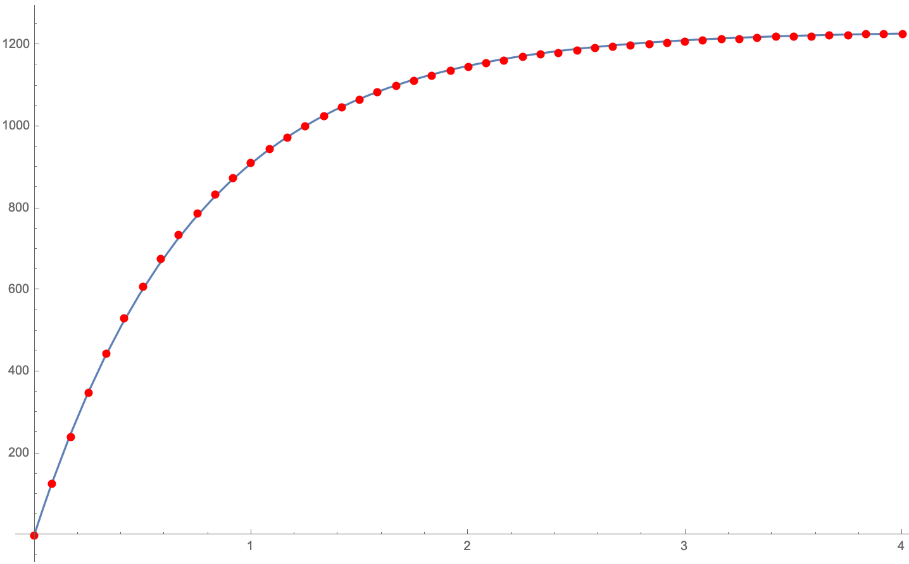
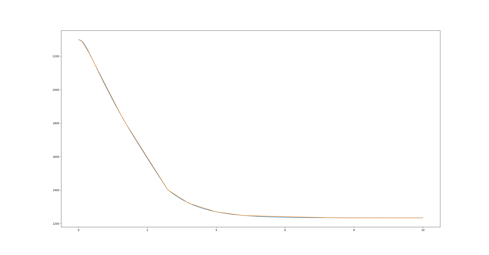

Useful game values
If you are making a bot, some of these values are given in FieldInfo. You can find more information on that here.
Rocket League is made in Unreal Engine, which means any dimensions will be in unreal units (uu).
Basic Dimensions
WARNING: Note that the X-axis is left and it is not the normal Cartesian layout. Also, yaw is zero at the positive x-axis and increases clockwise. Trig functions work out as usual because the two reversed conventions cancel each other.
Rotations are represented as YZX-ordered Euler angles.
Note: For scratch divide the values by 32.
Rocket League uses a coordinate system (X, Y, Z), where Z is upwards. Note also that negative Y is towards Blue's goal (team 0).
- Floor: 0
- Center field: (0, 0)
- Side wall: x=±4096
- Side wall length: 7936
- Back wall: y=±5120
- Back wall length: 5888
- Ceiling: z=2044
- Goal height: z=642.775
- Goal center-to-post: 892.755
- Goal depth: 880
- Corner wall length: 1629.174
- The corner planes intersect the axes at ±8064 at a 45 degrees angle
For wall lengths, the curvature at the intersections is ignored.

Boost Pads
Small boost pads: * Hitbox is a cylinder, height of 165uu, radius of 144uu * 28 in total. * Gives 12 boost. * Takes 4 seconds to refresh.
Big boost pads: * Hitbox is a cylinder, height of 168uu, radius of 208uu * 6 in total. * Gives 100 boost. * Takes 10 seconds to refresh. * The pads with a z-component of 73.0 are the big pads. Mirror these coordinates to get all 6: * Midfield: (3584, 0) * Corner: (3072, 4096)
A car picks up a boost pad if the car's center of mass (not hitbox) enters the pad's hitbox. This interaction is different when cars are standing still (see the Rocket Science video on boost pad hitboxes)
The coordinates of the 34 boost pads (in the order that RLBot uses):

[ 0.0, -4240.0, 70.0] (0)
[-1792.0, -4184.0, 70.0] (1)
[ 1792.0, -4184.0, 70.0] (2)
[-3072.0, -4096.0, 73.0] (3)
[ 3072.0, -4096.0, 73.0] (4)
[- 940.0, -3308.0, 70.0] (5)
[ 940.0, -3308.0, 70.0] (6)
[ 0.0, -2816.0, 70.0] (7)
[-3584.0, -2484.0, 70.0] (8)
[ 3584.0, -2484.0, 70.0] (9)
[-1788.0, -2300.0, 70.0] (10)
[ 1788.0, -2300.0, 70.0] (11)
[-2048.0, -1036.0, 70.0] (12)
[ 0.0, -1024.0, 70.0] (13)
[ 2048.0, -1036.0, 70.0] (14)
[-3584.0, 0.0, 73.0] (15)
[-1024.0, 0.0, 70.0] (16)
[ 1024.0, 0.0, 70.0] (17)
[ 3584.0, 0.0, 73.0] (18)
[-2048.0, 1036.0, 70.0] (19)
[ 0.0, 1024.0, 70.0] (20)
[ 2048.0, 1036.0, 70.0] (21)
[-1788.0, 2300.0, 70.0] (22)
[ 1788.0, 2300.0, 70.0] (23)
[-3584.0, 2484.0, 70.0] (24)
[ 3584.0, 2484.0, 70.0] (25)
[ 0.0, 2816.0, 70.0] (26)
[- 940.0, 3310.0, 70.0] (27)
[ 940.0, 3308.0, 70.0] (28)
[-3072.0, 4096.0, 73.0] (29)
[ 3072.0, 4096.0, 73.0] (30)
[-1792.0, 4184.0, 70.0] (31)
[ 1792.0, 4184.0, 70.0] (32)
[ 0.0, 4240.0, 70.0] (33)
NOTE: Some boost pad locations vary from map to map. It is recommended to use the FieldInfo, if you want to have the correct locations for any map.
Spawn Locations
| Kickoff | Blue | Orange |
|---|---|---|
| Right corner | loc: (-2048, -2560), yaw: 0.25 pi | loc: (2048, 2560), yaw: -0.75 pi |
| Left corner | loc: (2048, -2560), yaw: 0.75 pi | loc: (-2048, 2560), yaw: -0.25 pi |
| Back right | loc: (-256.0, -3840), yaw: 0.5 pi | loc: (256.0, 3840), yaw: -0.5 pi |
| Back left | loc: (256.0, -3840), yaw: 0.5 pi | loc: (-256.0, 3840), yaw: -0.5 pi |
| Far back center | loc: (0.0, -4608), yaw: 0.5 pi | loc: (0.0, 4608), yaw: -0.5 pi |
| Demolished | Blue | Orange |
|---|---|---|
| Right inside | loc: (-2304, -4608), yaw: 0.5 pi | loc: (2304, 4608), yaw: -0.5 pi |
| Right outside | loc: (-2688, -4608), yaw: 0.5 pi | loc: (2688, 4608), yaw: -0.5 pi |
| Left inside | loc: (2304, -4608), yaw: 0.5 pi | loc: (-2304, 4608), yaw: -0.5 pi |
| Left outside | loc: (2688, -4608), yaw: 0.5 pi | loc: (-2688, 4608), yaw: -0.5 pi |
Elevation of Objects at Rest
- Ball: 92.75 (its radius)
- Hybrid: 17.00
- Octane: 17.01
- Dominus: 17.05
- Breakout: 18.33
- Batmobile/Plank: 18.65
More information on car bodies in this spreadsheet by HalfwayDead.
Physics
Conversion: 1 uu = 1 cm (e.g. 2778 uu/s = 100 km/h)
- Gravity: 650 uu/s^2
- "Low" mutator: 325 uu/s^2
- "High" mutator: 1137.5 uu/s^2
- "Super High" mutator: 3250 uu/s^2
Ball
- Radius: 92.75 uu
- Max speed: 6000 uu/s
- "Slow" mutator: 1500 uu/s
- "Fast" mutator: 9000 uu/s
- "Super Fast" mutator: 15000 uu/s
- Mass: 30.0 (unit is arbitrary)
- Coefficient of restitution: 60% (it loses 40% of the component of its velocity that's toward the surface)
- Maximum ball angular velocity: 6.0 radians/s
Car
- Max car speed (boosting): 2300 uu/s
- Supersonic speed threshold: 2200 uu/s
- Max driving speed (forward and backward) with no boost: 1410 uu/s
- Car mass: 180.0 (unit is arbitrary)
- Boost consumption rate: 33.3/s
- Boost acceleration: 991.666 uu/s^2
- Acceleration in the ground:
- due to throttle: depends on velocity - https://samuelpmish.github.io/notes/RocketLeague/ground_control/#throttle
- due to braking (any amount): -3500.0 uu/s^2
- due to slowing during zero-throttle coasting: -525.0 uu/s^2
- Acceleration in the air due to throttle: ~66.667 uu/s^2 (yes, throttling accelerates the car in the air)
- Jumping -
- Double jump
- An instantaneous velocity increase of ~291.667 uu/s in the direction of your roof.
- Minimum and maximum rotation (in radians):
- Pitch: [-pi/2, pi/2]
- Yaw: [-pi, pi]
- Roll: [-pi, pi]
- Maximum car angular acceleration:
- Yaw: 9.11 radians/s^2
- Pitch: 12.46 radians/s^2
- Roll: 38.34 radians/s^2
- Maximum car angular velocity: 5.5 radians/s
- Turning
- Turning in Rocket League is very complex and not a lot is known. Hopefully, the numbers below can help you out a bit!
- Turn radius: https://samuelpmish.github.io/notes/RocketLeague/ground_control/#turning. Python implementation:
def turn_radius(v):
if v == 0:
return 0
return 1.0 / curvature(v)
# v is the magnitude of the velocity in the car's forward direction
def curvature(v):
if 0.0 <= v < 500.0:
return 0.006900 - 5.84e-6 * v
if 500.0 <= v < 1000.0:
return 0.005610 - 3.26e-6 * v
if 1000.0 <= v < 1500.0:
return 0.004300 - 1.95e-6 * v
if 1500.0 <= v < 1750.0:
return 0.003025 - 1.1e-6 * v
if 1750.0 <= v < 2500.0:
return 0.001800 - 4e-7 * v
return 0.0
- No matter if you're accelerating or decelerating, (as the throttle is 1) the car's turn radius and velocity balance out so the car turns 90 degrees in about 0.775 seconds, 180 degrees in 1.55 seconds, and 360 degrees in 3.1 seconds.
-
Accelerating while turning (starting from a standstill with throttle and steer set to 1)
- While turning with steer set to 1 (or -1), the maximum forwards velocity the car can reach is around 1234. It reaches this after 5 seconds.
- The speed of the car after x time can be estimated with the following equation:
1234 * (1 - e ^ [-{time / 0.74704}])

Example Python implementation:
import math
VMAX = 1234
TAU = 0.74704
def get_speed_from_time_turning(time):
return VMAX * (1 - math.exp(-(time / TAU)))
def get_turn_time_from_speed(speed):
speed_adj = -(speed / VMAX - 1)
return -math.log(speed_adj, math.e) * TAU
-
Decelerating while turning (starting from the top speed with throttle and steer set to 1)
- While turning with steer set to 1 (or -1), the minimum forward velocity the car can reach is around 1234. It reaches this after 7.5 seconds.
- The speed and time can both be estimated with linear piecewise functions. The blue lines is the real velocity, and the orange line is the velocity that is predicted by the piecewise.

Example Python implementation:
def get_speed_from_time_turning(time):
if time >= 7.5:
return 1234
if time >= 4.5:
return 1272.889 - 5.185 * time
if time >= 4:
return 1380 - 27.5 * time
if time >= 3.2:
return 1530 - 65 * time
if time >= 2.6:
return 1743.333 - 131.667 * time
if time >= 1.3:
return 2247 - 325.384615 * time
if time >= 0.3:
return 2344 - 400 * time
if time >= 0.1:
return 2323 - 330 * time
if time > 0:
return 2300 - 100 * time
return 2300
def get_time_turning_from_speed(speed):
if speed <= 1234:
return 7.5
if speed <= 1248:
return 245.4857 - 0.192857 * speed
if speed <= 1270:
return 50.18 - 0.03636 * speed
if speed <= 1322:
return 23.53846 - 0.01538 * speed
if speed <= 1401:
return 13.24 - 0.007595 * speed
if speed <= 1824:
return 6.9 - 0.00307 * speed
if speed <= 2224:
return 5.86 - 0.0025 * speed
if speed <= 2290:
return 7.039 - 0.00303 * speed
if speed <= 2300:
return 23 - 0.01 * speed
return 0